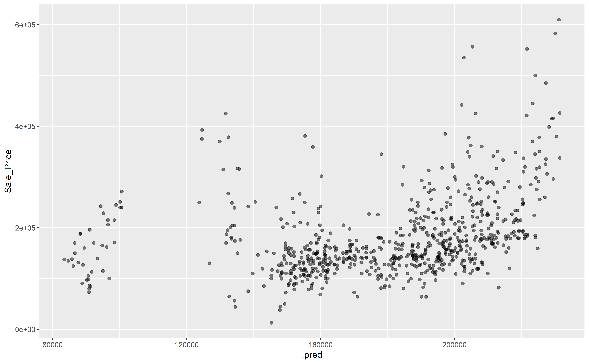

library(tidyverse)
library(tidymodels)Semaine 2 - Machine Learning
Introduction
L’objectif de ce lab est de nous familiariser avec la logique derrière le machine learning en utilisant la suite de package tidymodels.
Pour cela, nous allons travailler sur un jeu de données qui contient des informations sur des maisons à vendre dans la ville de Ames, Iowa, USA. Nous allons notament chercher à prédire le prix de vente des maisons en fonction des différentes caractéristiques.
Préparation des données
Nous allons commencer par charger les packages nécessaire à la suite du lab
Chargement des données
data(ames, package = "modeldata")
dim(ames)[1] 2930 74Nous pouvons jeter un coup d’oeil aux données:
glimpse(ames)Rows: 2,930
Columns: 74
$ MS_SubClass <fct> One_Story_1946_and_Newer_All_Styles, One_Story_1946…
$ MS_Zoning <fct> Residential_Low_Density, Residential_High_Density, …
$ Lot_Frontage <dbl> 141, 80, 81, 93, 74, 78, 41, 43, 39, 60, 75, 0, 63,…
$ Lot_Area <int> 31770, 11622, 14267, 11160, 13830, 9978, 4920, 5005…
$ Street <fct> Pave, Pave, Pave, Pave, Pave, Pave, Pave, Pave, Pav…
$ Alley <fct> No_Alley_Access, No_Alley_Access, No_Alley_Access, …
$ Lot_Shape <fct> Slightly_Irregular, Regular, Slightly_Irregular, Re…
$ Land_Contour <fct> Lvl, Lvl, Lvl, Lvl, Lvl, Lvl, Lvl, HLS, Lvl, Lvl, L…
$ Utilities <fct> AllPub, AllPub, AllPub, AllPub, AllPub, AllPub, All…
$ Lot_Config <fct> Corner, Inside, Corner, Corner, Inside, Inside, Ins…
$ Land_Slope <fct> Gtl, Gtl, Gtl, Gtl, Gtl, Gtl, Gtl, Gtl, Gtl, Gtl, G…
$ Neighborhood <fct> North_Ames, North_Ames, North_Ames, North_Ames, Gil…
$ Condition_1 <fct> Norm, Feedr, Norm, Norm, Norm, Norm, Norm, Norm, No…
$ Condition_2 <fct> Norm, Norm, Norm, Norm, Norm, Norm, Norm, Norm, Nor…
$ Bldg_Type <fct> OneFam, OneFam, OneFam, OneFam, OneFam, OneFam, Twn…
$ House_Style <fct> One_Story, One_Story, One_Story, One_Story, Two_Sto…
$ Overall_Cond <fct> Average, Above_Average, Above_Average, Average, Ave…
$ Year_Built <int> 1960, 1961, 1958, 1968, 1997, 1998, 2001, 1992, 199…
$ Year_Remod_Add <int> 1960, 1961, 1958, 1968, 1998, 1998, 2001, 1992, 199…
$ Roof_Style <fct> Hip, Gable, Hip, Hip, Gable, Gable, Gable, Gable, G…
$ Roof_Matl <fct> CompShg, CompShg, CompShg, CompShg, CompShg, CompSh…
$ Exterior_1st <fct> BrkFace, VinylSd, Wd Sdng, BrkFace, VinylSd, VinylS…
$ Exterior_2nd <fct> Plywood, VinylSd, Wd Sdng, BrkFace, VinylSd, VinylS…
$ Mas_Vnr_Type <fct> Stone, None, BrkFace, None, None, BrkFace, None, No…
$ Mas_Vnr_Area <dbl> 112, 0, 108, 0, 0, 20, 0, 0, 0, 0, 0, 0, 0, 0, 0, 6…
$ Exter_Cond <fct> Typical, Typical, Typical, Typical, Typical, Typica…
$ Foundation <fct> CBlock, CBlock, CBlock, CBlock, PConc, PConc, PConc…
$ Bsmt_Cond <fct> Good, Typical, Typical, Typical, Typical, Typical, …
$ Bsmt_Exposure <fct> Gd, No, No, No, No, No, Mn, No, No, No, No, No, No,…
$ BsmtFin_Type_1 <fct> BLQ, Rec, ALQ, ALQ, GLQ, GLQ, GLQ, ALQ, GLQ, Unf, U…
$ BsmtFin_SF_1 <dbl> 2, 6, 1, 1, 3, 3, 3, 1, 3, 7, 7, 1, 7, 3, 3, 1, 3, …
$ BsmtFin_Type_2 <fct> Unf, LwQ, Unf, Unf, Unf, Unf, Unf, Unf, Unf, Unf, U…
$ BsmtFin_SF_2 <dbl> 0, 144, 0, 0, 0, 0, 0, 0, 0, 0, 0, 0, 0, 0, 1120, 0…
$ Bsmt_Unf_SF <dbl> 441, 270, 406, 1045, 137, 324, 722, 1017, 415, 994,…
$ Total_Bsmt_SF <dbl> 1080, 882, 1329, 2110, 928, 926, 1338, 1280, 1595, …
$ Heating <fct> GasA, GasA, GasA, GasA, GasA, GasA, GasA, GasA, Gas…
$ Heating_QC <fct> Fair, Typical, Typical, Excellent, Good, Excellent,…
$ Central_Air <fct> Y, Y, Y, Y, Y, Y, Y, Y, Y, Y, Y, Y, Y, Y, Y, Y, Y, …
$ Electrical <fct> SBrkr, SBrkr, SBrkr, SBrkr, SBrkr, SBrkr, SBrkr, SB…
$ First_Flr_SF <int> 1656, 896, 1329, 2110, 928, 926, 1338, 1280, 1616, …
$ Second_Flr_SF <int> 0, 0, 0, 0, 701, 678, 0, 0, 0, 776, 892, 0, 676, 0,…
$ Gr_Liv_Area <int> 1656, 896, 1329, 2110, 1629, 1604, 1338, 1280, 1616…
$ Bsmt_Full_Bath <dbl> 1, 0, 0, 1, 0, 0, 1, 0, 1, 0, 0, 1, 0, 1, 1, 1, 0, …
$ Bsmt_Half_Bath <dbl> 0, 0, 0, 0, 0, 0, 0, 0, 0, 0, 0, 0, 0, 0, 0, 0, 0, …
$ Full_Bath <int> 1, 1, 1, 2, 2, 2, 2, 2, 2, 2, 2, 2, 2, 1, 1, 3, 2, …
$ Half_Bath <int> 0, 0, 1, 1, 1, 1, 0, 0, 0, 1, 1, 0, 1, 1, 1, 1, 0, …
$ Bedroom_AbvGr <int> 3, 2, 3, 3, 3, 3, 2, 2, 2, 3, 3, 3, 3, 2, 1, 4, 4, …
$ Kitchen_AbvGr <int> 1, 1, 1, 1, 1, 1, 1, 1, 1, 1, 1, 1, 1, 1, 1, 1, 1, …
$ TotRms_AbvGrd <int> 7, 5, 6, 8, 6, 7, 6, 5, 5, 7, 7, 6, 7, 5, 4, 12, 8,…
$ Functional <fct> Typ, Typ, Typ, Typ, Typ, Typ, Typ, Typ, Typ, Typ, T…
$ Fireplaces <int> 2, 0, 0, 2, 1, 1, 0, 0, 1, 1, 1, 0, 1, 1, 0, 1, 0, …
$ Garage_Type <fct> Attchd, Attchd, Attchd, Attchd, Attchd, Attchd, Att…
$ Garage_Finish <fct> Fin, Unf, Unf, Fin, Fin, Fin, Fin, RFn, RFn, Fin, F…
$ Garage_Cars <dbl> 2, 1, 1, 2, 2, 2, 2, 2, 2, 2, 2, 2, 2, 2, 2, 3, 2, …
$ Garage_Area <dbl> 528, 730, 312, 522, 482, 470, 582, 506, 608, 442, 4…
$ Garage_Cond <fct> Typical, Typical, Typical, Typical, Typical, Typica…
$ Paved_Drive <fct> Partial_Pavement, Paved, Paved, Paved, Paved, Paved…
$ Wood_Deck_SF <int> 210, 140, 393, 0, 212, 360, 0, 0, 237, 140, 157, 48…
$ Open_Porch_SF <int> 62, 0, 36, 0, 34, 36, 0, 82, 152, 60, 84, 21, 75, 0…
$ Enclosed_Porch <int> 0, 0, 0, 0, 0, 0, 170, 0, 0, 0, 0, 0, 0, 0, 0, 0, 0…
$ Three_season_porch <int> 0, 0, 0, 0, 0, 0, 0, 0, 0, 0, 0, 0, 0, 0, 0, 0, 0, …
$ Screen_Porch <int> 0, 120, 0, 0, 0, 0, 0, 144, 0, 0, 0, 0, 0, 0, 140, …
$ Pool_Area <int> 0, 0, 0, 0, 0, 0, 0, 0, 0, 0, 0, 0, 0, 0, 0, 0, 0, …
$ Pool_QC <fct> No_Pool, No_Pool, No_Pool, No_Pool, No_Pool, No_Poo…
$ Fence <fct> No_Fence, Minimum_Privacy, No_Fence, No_Fence, Mini…
$ Misc_Feature <fct> None, None, Gar2, None, None, None, None, None, Non…
$ Misc_Val <int> 0, 0, 12500, 0, 0, 0, 0, 0, 0, 0, 0, 500, 0, 0, 0, …
$ Mo_Sold <int> 5, 6, 6, 4, 3, 6, 4, 1, 3, 6, 4, 3, 5, 2, 6, 6, 6, …
$ Year_Sold <int> 2010, 2010, 2010, 2010, 2010, 2010, 2010, 2010, 201…
$ Sale_Type <fct> WD , WD , WD , WD , WD , WD , WD , WD , WD , WD , W…
$ Sale_Condition <fct> Normal, Normal, Normal, Normal, Normal, Normal, Nor…
$ Sale_Price <int> 215000, 105000, 172000, 244000, 189900, 195500, 213…
$ Longitude <dbl> -93.61975, -93.61976, -93.61939, -93.61732, -93.638…
$ Latitude <dbl> 42.05403, 42.05301, 42.05266, 42.05125, 42.06090, 4…Question 1: Faites un historgramme pour représenter les prix de vente des maisons. Faites un deuxième histogramme en utilisant une échelle logarithmique sur le prix.
Séparation des données
Pour commencer, nous voulons pouvoir répéter les différentes opérations du lab et obtenir les même résultats. Cela est très important dans un contexte de recherche où certaines opérations reponsent sur des tirages aléatoires. Pour cela, nous pouvons utiliser la fonction set.seed()
set.seed(42)Comme souvent en machine learning, nous allons vouloir séparer les données en jeu d’entraînement et de test.
splits <- initial_split(ames, prop = .75)
ames_train <- training(splits)
ames_test <- testing(splits)L’argument prop permet d’indiquer la proportion souhaitée dans le set d’entraînement.
Dans le cas où les classes qui nous intéressent sont déséquilibrées, il est possible d’indiquer une colonne dans l’argument strata pour que les groupes d’entraînement et de test conservent les proportions de cette classe.
Fit de modèles
Ici, nous allons essayer de déterminer le prix de vente des maisons en fonction de leur caractéristiques. Il s’agit donc d’un problème de régression.
Construction du modèle
Il existe de nombreux packages et fonctions pour faire appel à toute une collection de modèles. Tidymodels propose une interface unique à de nombreux modèles. Cela permet d’interagir de manière “unique” avec les modèles et leurs résultats.
L’approche de base pour un modèle consiste à:
- Spécifier le modèle mathématique souhaité.
- Spécifier le “moteur” ( engine ) à utiliser pour le modèle. Souvent, cela correspond au package dans lequel on retrouve la fonction.
- Dans certains cas, préciser le mode dans lequel le modèle va être utilisé. De base, si l’on travaille des données numériques, le mode sera Regression et si les données sont catégoriques, il sera Classification. Il est possible de le préciser explicitement.
Par exemple, pour une regression linéaire, nous pourrions avoir:
linear_reg() %>%
set_engine("lm")Linear Regression Model Specification (regression)
Computational engine: lm linear_reg() %>%
set_engine("glmnet")Linear Regression Model Specification (regression)
Computational engine: glmnet Nous allons commencer avec une simple regression linéaire (engine : "lm"). Nous pouvons définir le modèle:
lm_model <- linear_reg() %>%
set_engine("lm")Nous pourrions également utiliser un Random Forest. Pour cela, nous allons utiliser celui du package "ranger" (que vous devrez probablement installer). Il est possible que le modèle que nous souhaitons utiliser ait besoin de paramètres à préciser. Nous pouvons le faire à la définition du modèle:
rf_model <- rand_forest(trees = 1000, min_n = 5) %>%
set_engine("ranger") %>%
set_mode("regression")Ici, nous avons précisé directement les arguments trees et min_n. Nous verrons la semaine prochaine comment tester plusieurs valeurs pour ces hyperparamètres. Nous avons également précisé que nous souhaitons faire du Random Forest en mode régression.
À tout moment, vous pouvez consulter la doc des fonctions sur le site de tidymodels ou avec la commande ?rand_forest ou ?linear_reg.
La liste des différents modèles disponibles peut être consultée dans la documentation du package parsnip (partie de tidymodels)
Entraînement du modèle
Pour entraîner le modèle, il suffit de le fit sur des données. Il faut en revanche indiquer via une formule ce que nous souhaitons modéliser.
La forme générale pour les formules permet d’indiquer la variable expliquée ( response ou outcome ) en fonction des variables explicatives ( predictor ). En R, les formules sont écrites de la manière var_expliquee ~ var_explicative. Pour utiliser toutes les variables comme explicatives, on peut simplement écrire var_expliquee ~ .. Pour en savoir plus sur les formules et les possibilités, vous pouvez lire ce chapitre (Kuhn and Silge, 2022).
Par exemple, si nous voulons prédire le prix en fonction de la localisation de la maison, nous pouvons indiquer:
lm_fit <- lm_model %>%
fit(Sale_Price ~ Longitude + Latitude, data= ames_train)L’argument data indique sur quelles données faire le fit.
Nous pouvons, également entrainer notre modèle de Random Forest:
rf_fit <- rf_model %>%
fit(Sale_Price ~ Longitude + Latitude, data= ames_train)Résultats de l’entrainement
Pour afficher les résultats de l’entraînement, il y a plusieurs manières de faire, selon que nous voulons les afficher ou les visualiser.
Une première approche consiste à extraire les paramètres de fit:
lm_fit %>% extract_fit_engine()
Call:
stats::lm(formula = Sale_Price ~ Longitude + Latitude, data = data)
Coefficients:
(Intercept) Longitude Latitude
-133779792 -823798 1351690 rf_fit %>% extract_fit_engine()Ranger result
Call:
ranger::ranger(x = maybe_data_frame(x), y = y, num.trees = ~1000, min.node.size = min_rows(~5, x), num.threads = 1, verbose = FALSE, seed = sample.int(10^5, 1))
Type: Regression
Number of trees: 1000
Sample size: 2197
Number of independent variables: 2
Mtry: 1
Target node size: 5
Variable importance mode: none
Splitrule: variance
OOB prediction error (MSE): 1842151707
R squared (OOB): 0.7129196 Faites attention que certaines méthodes ne fonctionnent que pour les résultats de certains modèles. Par exemple, la fonction tidy() du package broom (inclus dans tidymodels) permet d’afficher certains résultats pour le résultats de la régrssion linéaire mais pas ceux du Random Forest.
tidy(lm_fit)# A tibble: 3 × 5
term estimate std.error statistic p.value
<chr> <dbl> <dbl> <dbl> <dbl>
1 (Intercept) -133779792. 6803737. -19.7 2.08e-79
2 Longitude -823798. 60860. -13.5 3.75e-40
3 Latitude 1351690. 84586. 16.0 1.85e-54Dans ces cas, il ne faut pas hésiter à rechercher un peu dans la doc la meilleure manière d’afficher les résultats.
Il est déjà possible à cette étape d’avoir une idée de la performance du modèle, sur les données d’entrainement. Vous l’avez peut-être vu pour le Random Forest, quand nous affichons les détails du modèle, un \(R^2\) est indiqué. Pour les résultats de la régression linéaire, on peut utiliser glance()
lm_fit %>% glance()# A tibble: 1 × 12
r.squared adj.r.squared sigma statistic p.value df logLik AIC BIC
<dbl> <dbl> <dbl> <dbl> <dbl> <dbl> <dbl> <dbl> <dbl>
1 0.163 0.162 73331. 213. 2.38e-85 2 -27728. 55465. 55487.
# ℹ 3 more variables: deviance <dbl>, df.residual <int>, nobs <int>Faire des prédictions
L’idée de cette étape est d’appliquer le modèle entraîné sur des données, en générale celles de tests. De base, cela se fait via la fonction predict:
lm_fit %>% predict(new_data = ames_test)# A tibble: 733 × 1
.pred
<dbl>
1 213054.
2 202464.
3 196577.
4 227633.
5 225029.
6 224060.
7 221036.
8 217686.
9 218026.
10 215263.
# ℹ 723 more rowsComme vous le voyez, nous obtenons une liste de valeur prédite. La colonne contenant celles-ci s’appelle .pred.
Il est souvent utile coller les prédictions au tableau des données de test:
lm_pred <- lm_fit %>%
predict(new_data = ames_test) %>%
bind_cols(ames_test)Cette fois, nous obtenons un tableau complet, avec les données réelles et les données prédites. Nous pouvons par exemple les visualiser:
lm_pred %>%
ggplot(aes(x=.pred, y=Sale_Price)) +
geom_point(alpha = .5)
Question 2: Faites de même pour le modèle Random Forest ! Que constatez vous ?
Travailler avec des Workflow
Souvent, faire du machine learning ne se limite pas à un modèle dont on connait les hyperparamètres, à l’entrainer et à le tester. Il y a souvent des étapes de prétraitement et d’optimisation.
Pour faciliter ces différentes étapes, Tidymodels propose l’utilisation de workflow, qui va nous aider à enchaîner différentes étapes dans le traitement et la manipulation de modèles. Nous exploiterons un peu plus en détail leur intérêt la semaine prochaine mais commençons par les bases.
Un workflow commence toujours par être initialisé avec workflow(). Il est ensuite possible d’y ajouter un modèle (ou plusieurs, voir semaine prochaine) et une formule.
lm_workflow <-
workflow() %>%
add_model(lm_model)
lm_workflow══ Workflow ════════════════════════════════════════════════════════════════════
Preprocessor: None
Model: linear_reg()
── Model ───────────────────────────────────────────────────────────────────────
Linear Regression Model Specification (regression)
Computational engine: lm Pour le moment, seul le modèle est présent. Il n’y a pas de prétraitement. Le prétraitement minimal à ajouter est une formule:
lm_workflow <-
lm_workflow %>%
add_formula(Sale_Price ~ Longitude + Latitude)
lm_workflow══ Workflow ════════════════════════════════════════════════════════════════════
Preprocessor: Formula
Model: linear_reg()
── Preprocessor ────────────────────────────────────────────────────────────────
Sale_Price ~ Longitude + Latitude
── Model ───────────────────────────────────────────────────────────────────────
Linear Regression Model Specification (regression)
Computational engine: lm Question 3: Créez un workflow rf_workflow pour notre random forest.
Une fois le workflow créé, on peut, comme pour un modèle, l’entrainer:
lm_wf_fit <- lm_workflow %>%
fit(data = ames_train)
lm_wf_fit══ Workflow [trained] ══════════════════════════════════════════════════════════
Preprocessor: Formula
Model: linear_reg()
── Preprocessor ────────────────────────────────────────────────────────────────
Sale_Price ~ Longitude + Latitude
── Model ───────────────────────────────────────────────────────────────────────
Call:
stats::lm(formula = ..y ~ ., data = data)
Coefficients:
(Intercept) Longitude Latitude
-133779792 -823798 1351690 Il est également possible de l’utiliser pour faire nos prédiction:
lm_wf_pred <- lm_wf_fit %>%
predict(new_data = ames_test)
lm_wf_pred# A tibble: 733 × 1
.pred
<dbl>
1 213054.
2 202464.
3 196577.
4 227633.
5 225029.
6 224060.
7 221036.
8 217686.
9 218026.
10 215263.
# ℹ 723 more rowsNous verrons plus en détails l’intérêt de ces workflow la semaine prochaine.
Preprocessing et feature engineering
Dans Tidymodels, les opérations de preprocessing et de feature engineering sont faites via des recipes.
Dans une recette de base, nous allons définir une formule, élément de base pour définir les variables expliquées et explicatives, ainsi qu’une série de step_* qui correspondront à la suite d’opérations que nous souhaitons faire sur nos données.
Par exemple, nous pourrions vouloir faire quelque chose comme cela:
rcp_ames <- recipe(Sale_Price ~ Neighborhood + Gr_Liv_Area + Year_Built + Bldg_Type,
data = ames_train) %>%
step_log(Gr_Liv_Area, base=10) %>%
step_other(Neighborhood, threshold = 0.01) %>%
step_dummy(all_nominal_predictors())
rcp_ames── Recipe ──────────────────────────────────────────────────────────────────────── Inputs Number of variables by roleoutcome: 1
predictor: 4── Operations • Log transformation on: Gr_Liv_Area• Collapsing factor levels for: Neighborhood• Dummy variables from: all_nominal_predictors()Dans cette recette, nous avons:
- Donné la base de la recette avec
recipe(), dans laquelle nous spécifions la formule à utiliser. Ici nous précisonsdata = ames_train. Il faut noter qu’à cette étape, les données ne sont pas transformées. L’argumentdatapermet juste d’indiquer les types des colonnes. Nous aurions pu mettredata = ames, les résultats auraient été les mêmes. Ici, nous allons prédire le prix de vente à partir du quartier (Neighborhood), de la surface habitable (Gr_Liv_Area), de l’année de construction (Year_Built) et du type de bâtiment (Bldg_Type). step_log()permet d’appliquer un log base 10 sur le predictorGr_Liv_Area.step_other()permet de regrouper les catégories les moins fréquentes dans une catégorie “other”.step_dummy()permet de transformer des colonnes en variable dummy. Il est possible de lui dire de le faire directement sur toutes les variables qualitatives avec la fonctionall_nominal_predictors().
Une fois la recette créée, il est possible de l’ajouter à un workflow:
lm_workflow <- workflow() %>%
add_model(lm_model) %>%
add_recipe(rcp_ames)
lm_workflow══ Workflow ════════════════════════════════════════════════════════════════════
Preprocessor: Recipe
Model: linear_reg()
── Preprocessor ────────────────────────────────────────────────────────────────
3 Recipe Steps
• step_log()
• step_other()
• step_dummy()
── Model ───────────────────────────────────────────────────────────────────────
Linear Regression Model Specification (regression)
Computational engine: lm Cette fois, pas besoin d’ajouter une formule car elle est déjà décrite dans la recette.
On peut simplement fit notre workflow:
lm_wf_fit <- lm_workflow %>%
fit(data = ames_train)
lm_wf_fit══ Workflow [trained] ══════════════════════════════════════════════════════════
Preprocessor: Recipe
Model: linear_reg()
── Preprocessor ────────────────────────────────────────────────────────────────
3 Recipe Steps
• step_log()
• step_other()
• step_dummy()
── Model ───────────────────────────────────────────────────────────────────────
Call:
stats::lm(formula = ..y ~ ., data = data)
Coefficients:
(Intercept)
-2.269e+06
Gr_Liv_Area
2.570e+05
Year_Built
8.271e+02
Neighborhood_College_Creek
6.420e+03
Neighborhood_Old_Town
1.151e+03
Neighborhood_Edwards
-8.436e+03
Neighborhood_Somerset
3.572e+04
Neighborhood_Northridge_Heights
9.771e+04
Neighborhood_Gilbert
-1.470e+04
Neighborhood_Sawyer
5.381e+01
Neighborhood_Northwest_Ames
-1.596e+03
Neighborhood_Sawyer_West
-4.695e+03
Neighborhood_Mitchell
-2.009e+03
Neighborhood_Brookside
6.112e+03
Neighborhood_Crawford
3.951e+04
Neighborhood_Iowa_DOT_and_Rail_Road
-7.030e+03
Neighborhood_Timberland
3.651e+04
Neighborhood_Northridge
8.306e+04
Neighborhood_Stone_Brook
1.101e+05
Neighborhood_South_and_West_of_Iowa_State_University
-9.404e+03
Neighborhood_Clear_Creek
2.513e+04
Neighborhood_Meadow_Village
9.208e+03
Neighborhood_Briardale
...
and 14 more lines.Il est possible de récupérer seulement la recette ou seulement le modèle entrainé:
lm_wf_fit %>% extract_fit_engine()
Call:
stats::lm(formula = ..y ~ ., data = data)
Coefficients:
(Intercept)
-2.269e+06
Gr_Liv_Area
2.570e+05
Year_Built
8.271e+02
Neighborhood_College_Creek
6.420e+03
Neighborhood_Old_Town
1.151e+03
Neighborhood_Edwards
-8.436e+03
Neighborhood_Somerset
3.572e+04
Neighborhood_Northridge_Heights
9.771e+04
Neighborhood_Gilbert
-1.470e+04
Neighborhood_Sawyer
5.381e+01
Neighborhood_Northwest_Ames
-1.596e+03
Neighborhood_Sawyer_West
-4.695e+03
Neighborhood_Mitchell
-2.009e+03
Neighborhood_Brookside
6.112e+03
Neighborhood_Crawford
3.951e+04
Neighborhood_Iowa_DOT_and_Rail_Road
-7.030e+03
Neighborhood_Timberland
3.651e+04
Neighborhood_Northridge
8.306e+04
Neighborhood_Stone_Brook
1.101e+05
Neighborhood_South_and_West_of_Iowa_State_University
-9.404e+03
Neighborhood_Clear_Creek
2.513e+04
Neighborhood_Meadow_Village
9.208e+03
Neighborhood_Briardale
2.404e+04
Neighborhood_Bloomington_Heights
2.789e+04
Neighborhood_other
4.983e+04
Bldg_Type_TwoFmCon
-1.524e+04
Bldg_Type_Duplex
-4.091e+04
Bldg_Type_Twnhs
-6.581e+04
Bldg_Type_TwnhsE
-3.739e+04 # Ici le modèle extrait est un "lm", donc nous pouvons appeler tidy() en suivant:
lm_wf_fit %>% extract_fit_engine() %>% tidy()# A tibble: 29 × 5
term estimate std.error statistic p.value
<chr> <dbl> <dbl> <dbl> <dbl>
1 (Intercept) -2268637. 118094. -19.2 4.45e- 76
2 Gr_Liv_Area 257032. 7297. 35.2 2.60e-215
3 Year_Built 827. 59.6 13.9 4.99e- 42
4 Neighborhood_College_Creek 6420. 4216. 1.52 1.28e- 1
5 Neighborhood_Old_Town 1151. 4321. 0.266 7.90e- 1
6 Neighborhood_Edwards -8436. 3940. -2.14 3.24e- 2
7 Neighborhood_Somerset 35718. 4911. 7.27 4.87e- 13
8 Neighborhood_Northridge_Heights 97713. 5188. 18.8 2.04e- 73
9 Neighborhood_Gilbert -14701. 4795. -3.07 2.19e- 3
10 Neighborhood_Sawyer 53.8 4455. 0.0121 9.90e- 1
# ℹ 19 more rows# Pour les recettes, la fonction tidy() est toujours disponible
lm_wf_fit %>% extract_recipe() %>% tidy()# A tibble: 3 × 6
number operation type trained skip id
<int> <chr> <chr> <lgl> <lgl> <chr>
1 1 step log TRUE FALSE log_8SwW2
2 2 step other TRUE FALSE other_Cxu3l
3 3 step dummy TRUE FALSE dummy_a2EDjIl existe de nombreuses autres step_*. Vous pouvez en trouver dans ce chapitre (Kuhn and Silge, 2022) ou sur le site du package recipe.
Performance des modèles
Considèrons le modèle suivant:
lm_model <- linear_reg() %>% set_engine("lm")
rcp_ames <-
recipe(Sale_Price ~ Neighborhood + Gr_Liv_Area + Year_Built + Bldg_Type +
Latitude + Longitude, data = ames_train) %>%
step_log(Gr_Liv_Area, base = 10) %>%
step_other(Neighborhood, threshold = 0.01) %>%
step_dummy(all_nominal_predictors())
lm_wf <-
workflow() %>%
add_model(lm_model) %>%
add_recipe(rcp_ames)
lm_wf_fit <- fit(lm_wf, ames_train)Nous allons vouloir mesurer la performance de notre modèle. Une première approche consiste à comparer les valeurs prédites aux vraies valeurs:
lm_wf_pred <- lm_wf_fit %>%
predict(new_data = ames_test) %>%
bind_cols(ames_test %>% select(Sale_Price))Nous pouvons plotter les valeurs prédites et les vraies valeurs:
lm_wf_pred %>%
ggplot(aes(x=.pred, y=Sale_Price)) +
geom_point(alpha=.5) +
geom_abline(lty=2, colour = "gray") +
labs(x = "Prix de vente prédit", y= "Prix de vente") +
coord_obs_pred() # Pour forcer la même echelle sur x et yLe package yardstick, inclus dans tidymodels, proposer une série de fonction pour calculer différentes métriques de performance, souvent sous la forme function(data, truth, predicted, ...).
Par exemple, on peut calculer l’erreur quadratique moyenne (RMSE):
lm_wf_pred %>%
rmse(truth = Sale_Price, estimate = .pred)# A tibble: 1 × 3
.metric .estimator .estimate
<chr> <chr> <dbl>
1 rmse standard 37375.On peut calculer plusieurs métriques d’un coup en spécifiant une liste de fonction:
# Root Mean Sqared Error, R squared, Mean Absolute error
lm_metrics <- metric_set(rmse, rsq, mae)
lm_wf_pred %>%
lm_metrics(truth = Sale_Price, estimate = .pred)# A tibble: 3 × 3
.metric .estimator .estimate
<chr> <chr> <dbl>
1 rmse standard 37375.
2 rsq standard 0.779
3 mae standard 25283. Il existe également d’autres fonction selon qu’on fasse de la classification binaire ou multiple. Plus de détails sont disponibles dans ce chapitre (Kuhn and Silge, 2022) ou sur dans la documentation de Yardstick
À vous de jouer !
Dans cette deuxième partie, nous allons faire de la classification
Les données
Nous allons travailler sur un jeu de données qui contient des informations sur des réservations d’hôtels. Nous allons essayer de prédire si une réservation avait des enfants. Pour cela, nous allons utiliser des méthodes de classification.
library(tidymodels)
library(readr)
hotels <-
read_csv("https://tidymodels.org/start/case-study/hotels.csv") %>%
mutate(across(where(is.character), as.factor))
dim(hotels)[1] 50000 23Question 4: Déterminez la proportion de réservations qui ont des enfants.
Séparation des données
Question 5: Commencez par fixer un seed et puis divisez les données en un ensemble d’entraînement et un ensemble de test. Utilisez 75% des données pour l’entraînement. Assurez-vous que les proportions de réservations avec enfants sont les mêmes dans les deux ensembles.
Premier modèle: Régression logistique
Choix du modèle
Question 6: Configurez un modèle de regression logistique en utilisant la fonction logistic_reg(). Utilisez la fonction set_engine() pour spécifier que vous voulez utiliser la fonction glm(). Nous travaillons en mode Classification.
Recette
Question 7: Créez une recette pour le modèle en utilisant la fonction recipe().
Nous allons utiliser les recettes suivantes:
step_date(): pour créer les variable de l’année, du mois et du jour de la semainestep_holiday(): pour créer une variable qui indique si la réservation a été faite pendant une période de vacances. Nous vous avons fourni une liste de vacances dans le fichier de réponse (voir ci-dessous). Vous pouvez indiquer d’utiliser cette liste avecstep_holiday(arrival_date, holidays = holidays)step_rm(): pour supprimer les variablesarrival_date
Nous allons également transformer les variables catégorielles en dummy variables et les variables numériques en variables centrées et réduites.
step_dummy()pour convertir les variables catégorielles (all_nominal_predictors()) en variables binairesstep_zv()permet d’enlever les variables qui ne contiennent qu’une unique valeur (all_predictors())step_normalize()pour centrer et réduire les variables numériques (all_numeric_predictors())
Pour step_holiday, vous pouvez utiliser la liste suivante:
holidays <- c("AllSouls", "AshWednesday", "ChristmasEve", "Easter",
"ChristmasDay", "GoodFriday", "NewYearsDay", "PalmSunday")Création du workflow
Question 8: Créez un workflow en utilisant la fonction workflow(). Ajoutez-y la recette et le modèle.
Entraînement et Prédiction
Question 9: Fittez votre modèle
Question 10: Prédisez le modèle en utilisant le bloc de code ci-dessous. Expliquez ce qu’il fait !
lr_pred <- predict(lr_fit, hotel_test) %>%
bind_cols(predict(lr_fit, hotel_test, type = "prob")) %>%
bind_cols(hotel_test %>% select(children))Évaluation du modèle
Nous allons générer une courbe ROC pour évaluer le modèle
lr_auc <- lr_pred %>%
roc_curve(children, .pred_children) %>%
mutate(model = "Logistic Regression")
lr_auc %>% autoplot()Nous pouvons également calculer directement l’aire sous la courve en faisant appelle à yardstick et à la fonction roc_auc
lr_pred %>%
roc_auc(children, .pred_children)Deuxième modèle: Random Forest
Cette fois, nous allons faire de la classification avec Random Forest. Vous pouvez utiliser le modèle suivant:
cores <- parallel::detectCores() # Nombre de coeur à disposition pour le calcul
rf_mod <-
rand_forest(trees = 1000) %>%
set_engine("ranger", num.threads = cores) %>%
set_mode("classification")Question 11: Reproduisez les étapes de préprocessing, d’entrainement et de prédiction avec ce nouveau model. Pour le preprocessing, utilisez simplement les étapes:
step_date()avec la date d’arrivéestep_holiday()pour déterminer si la date d’arrivée correspond à une période de vacancestep_rm()pour retirer la date d’arrivée (nous voulons simplement garder l’indication de si cela correspond à une période de vacances)
Question 12: Calculez l’aire sous la courbe ROC. Comparez par rapport à celle obtenu pour le premier modèle.
Question 13: Faite un graphique contenant les courbes ROC pour les deux modèles. Pour cela, inspirez du code fourni pour la regression logistique pour obtenir un tableau similaire à lr_auc, mais contenant les valeurs obtenues avec Random Forest, en indiquant “Random Forest” dans la colonne model. Combinez, à l’aide de bind_rows() les deux tableaux et utilisez ggplot pour afficher les deux courbes sur un même grahique en changeant la couleur selon le modèle.
References
Kuhn, M. and Silge, J. (2022). Tidy modeling with R: A framework for modeling in the tidyverse. O’Reilly Media.